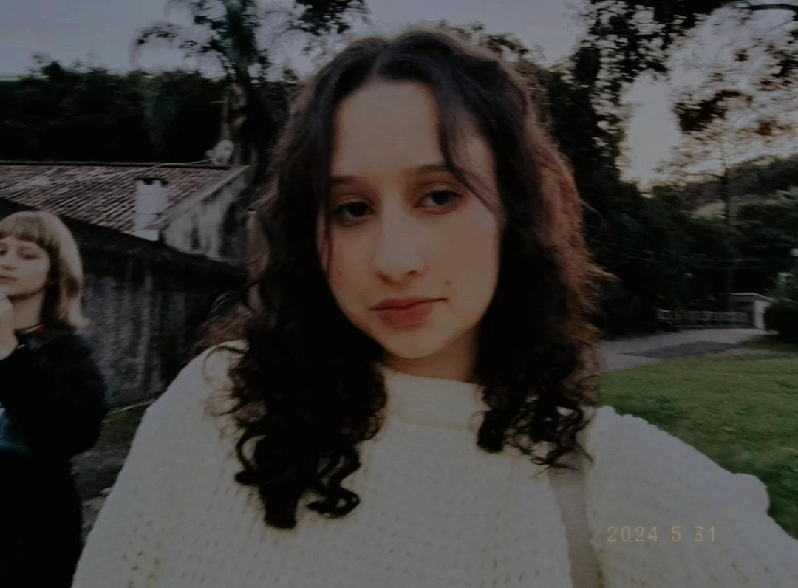
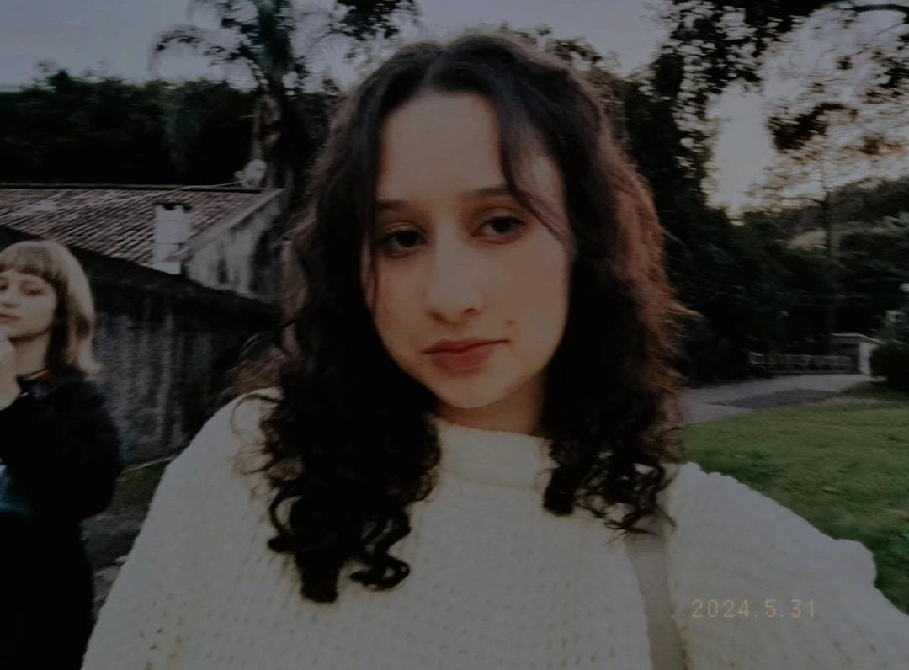
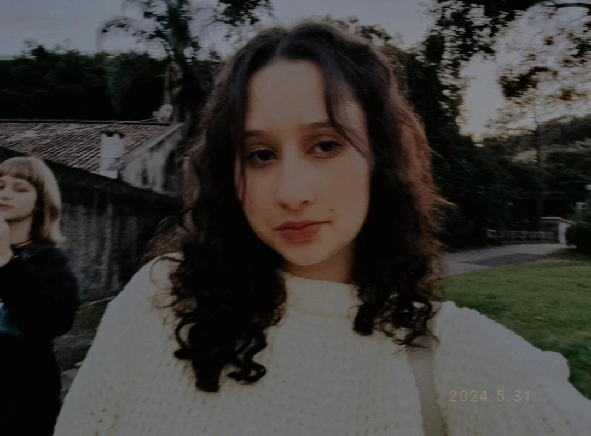

Aqui você encontrará meus trabalhos realizados ao longo dos trimestres,
mostrando meu desenvolvimento em diversas áreas do conhecimento,
juntamente com atividades dos anos anteriores.
Este portfólio também inclui minhas redes sociais para contato,
além de meus projetos no GitHub. Por fim, você encontrará meu currículo e um
pouco mais sobre mim.
 Eu sou a Natália, mas meus amigos me chamam de Nath. Estou no terceiro ano do ensino médio no Sesi 🥺 e, apesar de ter algumas ideias sobre meu futuro, ainda tô explorando várias áreas, como investimentos, mas sem pressa de decidir. Eu gosto de coisas simples, como Harry Potter, DC, doramas e comidas tipo strogonoff de frango, lasanha de carne, e adoro queijo parmesão. Também sou fã de bebidas, especialmente soda italiana e TNT de limonada rosa. Sou bem fechada, mas sou doce com quem me conhece de verdade. Tenho diabetes desde os seis anos e algumas histórias bem curiosas, mas acho que, no fundo, nem eu me conheço completamente. Afinal, quem realmente conhece alguém por completo?